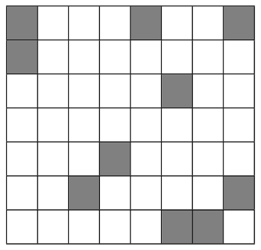
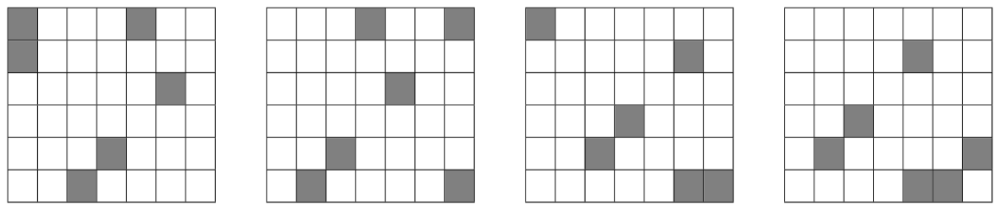

Bánh Bò
Ever since the Earth got destroyed, Trillian has been missing some Earth delicacies. Today, she had the spaceship’s food machine generate for her a Vietnamese delicacy she once enjoyed: bánh bò hấp (steamed chewy sponge cake).
Trillian has an unlimited number of bánh bò hấp pieces. Each piece of bánh bò hấp is either red or white. She wants to assemble \(rc\) pieces of bánh bò hấp into a grid with dimensions \(r \times c\), where each cell contains a single piece of bánh bò hấp. Thus, there are exactly \(2^{rc}\) distinct ways to assemble bánh bò hấp into an \(r \times c\) grid, since we consider pieces of the same color to be identical.
We say an assembly of bánh bò hấp is uniform if all \(6 \times 7\) subgrids have the same number of red pieces. Consequently, in a uniform bánh bò hấp assembly, all \(6 \times 7\) subgrids have the same number of white pieces as well. Note that an \(r \times c\) grid has \((r-5)(c-6)\) subgrids of dimensions \(6 \times 7\).
For example, Figure D.1 illustrates a uniform assembly of \(7 \times 8\) pieces of bánh bò hấp, where shaded cells represent red bánh bò hấp pieces and unshaded cells represent white bánh bò hấp pieces. Figure D.2 shows that all four \(6 \times 7\) subgrids have \(6\) red pieces and \(36\) white pieces.


Given \(r\) and \(c\), where \(r\) is a multiple of \(6\) and \(c\) is a multiple of \(7\), Trillian would like to calculate the number of possible uniform bánh bò hấp assemblies modulo \(998\,244\,353\).
Input
Input consists of a single line containing two integers \(r\) and \(c\) (\(6 \le r \le 66\,666\); \(r\) is a multiple of \(6\); \(7 \le c \le 77\,777\); \(c\) is a multiple of \(7\)).
Output
Output the number of possible uniform bánh bò hấp assemblies modulo \(998\,244\,353\).
6 7
780136139
Explanation for the sample input/output #1
The output is \(2^{42}\) modulo \(998\,244\,353\).
12 14
22889737
12 42
96403614
42 14
94940316